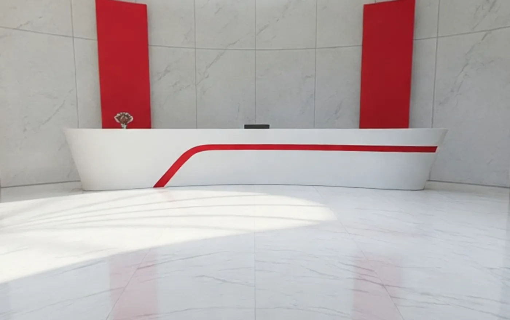

Direction 01
Working sample
Luxury 360°
Luxury 360°
category showroom
A cinematic environment organised around the three Swisstek collections. The customer moves through ten spaces and each zone is a gateway to a product family, rather than every product being physically on display.
MovementTen spaces, guided route or free jump
StrengthHighest render quality, lowest technical risk
LimitationSurfaces cannot change inside the panorama